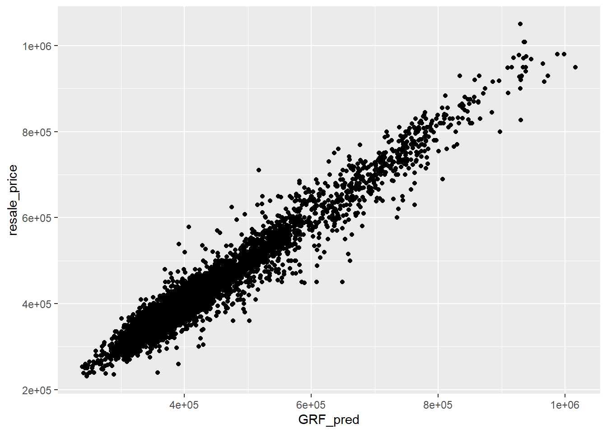

pacman::p_load(tidyverse, sf, httr, jsonlite, rvest)
set.seed(1234)In Class Exercise 8
8 Introduction
In this exercise, we work on reinforcing our learning from hands-on exercise 8 by conducting various tests.
8.1 Data and Packages
8.1.1 The Data
Aspatial dataset:
- HDB Resale data: a list of HDB resale transacted prices in Singapore from Jan 2017 onwards. It is in csv format which can be downloaded from Data.gov.sg.
Geospatial dataset:
- MP14_SUBZONE_WEB_PL: a polygon feature data providing information of URA 2014 Master Plan Planning Subzone boundary data. It is in ESRI shapefile format. This data set was also downloaded from Data.gov.sg
Locational factors with geographic coordinates:
Downloaded from Data.gov.sg.
Eldercare data is a list of eldercare in Singapore. It is in shapefile format.
Hawker Centre data is a list of hawker centres in Singapore. It is in geojson format.
Parks data is a list of parks in Singapore. It is in geojson format.
Supermarket data is a list of supermarkets in Singapore. It is in geojson format.
CHAS clinics data is a list of CHAS clinics in Singapore. It is in geojson format.
Childcare service data is a list of childcare services in Singapore. It is in geojson format.
Kindergartens data is a list of kindergartens in Singapore. It is in geojson format.
Downloaded from Datamall.lta.gov.sg.
MRT data is a list of MRT/LRT stations in Singapore with the station names and codes. It is in shapefile format.
Bus stops data is a list of bus stops in Singapore. It is in shapefile format.
Locational factors without geographic coordinates:
Downloaded from Data.gov.sg.
- Primary school data is extracted from the list on General information of schools from data.gov portal. It is in csv format.
Retrieved/Scraped from other sources
CBD coordinates obtained from Google.
Shopping malls data is a list of Shopping malls in Singapore obtained from Wikipedia.
Good primary schools is a list of primary schools that are ordered in ranking in terms of popularity and this can be found at Local Salary Forum.
8.1.2 The Packages (Take Home Exercise 3)
We will use the following packages for our analysis:
tidyverse: A collection of R packages designed for data manipulation, visualization, and exploration using a consistent, grammar-based approach.
sf: Provides support for handling and analyzing spatial data in R, using simple features to represent geographic geometries.
httr: Simplifies working with HTTP requests and APIs in R, enabling easy fetching and sending of web data.
jsonlite: A package for parsing and generating JSON data in R, offering fast and flexible methods for converting between JSON and R objects.
rvest: Facilitates web scraping in R by extracting and processing HTML content from web pages in a structured way.
We use the p_load() function of the pacman package as shown in the code chunk below to import these packages into our environment.
Packages for In Class Exercise 8
sf: R package for handling, analyzing, and visualizing spatial data using simple features.
spdep: R package for spatial dependence modeling, including spatial autocorrelation and regression analysis.
GWmodel: R package for geographically weighted regression (GWR) and other localized spatial models.
SpatialML: R package for spatial machine learning, offering tools for spatially explicit predictive modeling.
tmap: R package for creating thematic maps, offering a flexible and layered approach for spatial visualization.
rsample: R package for resampling datasets, facilitating model training and evaluation with various sampling methods.
Metrics: R package for calculating common metrics for regression and classification models, such as RMSE and accuracy.
tidyverse: A collection of R packages designed for data manipulation, analysis, and visualization in a consistent and coherent syntax.
kableExtra: An R package that enhances the formatting and styling of tables created with
knitr::kable(), allowing for complex and customizable tables in HTML, LaTeX, and PDF outputs.We use the p_load() function of the pacm
pacman::p_load(sf, spdep, GWmodel, SpatialML, tmap, rsample, Metrics, tidyverse, kableExtra)8.2 Data
We start by importing our rds file into the environment,
mdata <- read_rds("data/mdata.rds")We now import the HDB Resale flat prices dataset. We narrow down the data to the time periods that we are interested in, January 2023 till September 2024.
resale <- read_csv("data/HDB/rawdata/resale.csv") %>%
filter(month >= "2023-01" & month <= "2024-09")8.2.1 Data Sampling
The entire data are split into training and test data sets with 65% and 35% respectively by using the initial_split() function of the rsample package.
After splitting the data, we will store them as RDS files. We use the write_rds() function to create the RDS file and the read_rds() function to load the RDS file into our environment. This facilitates computational efficiency.
The sampling below isn’t done perfectly as it is completely random. Using stratified sampling may be a better approach to take for this particular situation.
In methods such as random forest, training and test data frames are enough. However, when implementing decision trees, validation data frame is needed as well as without it, the tree may be too long.
resale_split <- initial_split(mdata,
prop = 6.5/10,)
train_data <- training(resale_split)
test_data <- testing(resale_split)write_rds(train_data, "data/train_data.rds")
write_rds(test_data, "data/test_data.rds")train_data=read_rds('data/train_data.rds')
test_data=read_rds('data/test_data.rds')8.2.2 Data Preparation (Pre-Take Home Exercise 3)
The below code chunk tidies the data by combining the data accurately to form the entire address.
resale_tidy <- resale %>%
mutate(address = paste(block,street_name)) %>%
mutate(remaining_lease_yr = as.integer(
str_sub(remaining_lease, 0, 2)))%>%
mutate(remaining_lease_mth = as.integer(
str_sub(remaining_lease, 9, 11)))We now narrow the dataset down further to only include data from September 2024 using the below code chunk.This is done to facilitate time efficiency and speed for this In-Class Exercise.
resale_selected <- resale_tidy %>%
filter(month == "2024-09")The code chunk below creates a list of unique addresses in order to avoid having the same street and area being geocoded multiple times. Geocoding is usually ‘first come, first serve’, so sorting actually makes the code chunk more efficient.
add_list <- sort(unique(resale_selected$address))The code chunk below is used in order to acquire the postal codes of the required addresses with the help of geocoding. The jsonlite and rvest packages are important for this.
The OneMap API is used for reverse geocoding.
We start by defining a function get_coords.
get_coords <- function(add_list){
# Create a data frame to store all retrieved coordinates
postal_coords <- data.frame()
for (i in add_list){
#print(i)
r <- GET('https://www.onemap.gov.sg/api/common/elastic/search?',
query=list(searchVal=i,
returnGeom='Y',
getAddrDetails='Y'))
data <- fromJSON(rawToChar(r$content))
found <- data$found
res <- data$results
# Create a new data frame for each address
new_row <- data.frame()
# If single result, append
if (found == 1){
postal <- res$POSTAL
lat <- res$LATITUDE
lng <- res$LONGITUDE
new_row <- data.frame(address= i,
postal = postal,
latitude = lat,
longitude = lng)
}
# If multiple results, drop NIL and append top 1
else if (found > 1){
# Remove those with NIL as postal
res_sub <- res[res$POSTAL != "NIL", ]
# Set as NA first if no Postal
if (nrow(res_sub) == 0) {
new_row <- data.frame(address= i,
postal = NA,
latitude = NA,
longitude = NA)
}
else{
top1 <- head(res_sub, n = 1)
postal <- top1$POSTAL
lat <- top1$LATITUDE
lng <- top1$LONGITUDE
new_row <- data.frame(address= i,
postal = postal,
latitude = lat,
longitude = lng)
}
}
else {
new_row <- data.frame(address= i,
postal = NA,
latitude = NA,
longitude = NA)
}
# Add the row
postal_coords <- rbind(postal_coords, new_row)
}
return(postal_coords)
}coords <- get_coords(add_list)write_rds(coords, "data/HDB/rds/coords.rds")coords=read_rds('data/HDB/rds/coords.rds')Be sure to go through and verify that there are no null values with regards to coordinates. If there are, then remove those columns.
Do refer to Hands-on exercise 1 to calculate the ‘direct flying distance’ between HDB block and locational factors such as CHAS clinics.
8.3 Correlation Matrix
After successfully completing the above split, we proceed to compute the correlation matrix.
As stated in previous exercises, this is a key step in predictive modelling as it helps you identify if there is multicollinearity.
We use the ggcorrmat() function for this/
Having a high level of multi-collinearity can lead to unsatisfactory models.
mdata_nogeo <- mdata %>%
st_drop_geometry()
ggstatsplot::ggcorrmat(mdata_nogeo[,2:17])
8.4 Building a non-spatial multiple linear regression model
We create a model using the lm() function as shown in the code chunk below. After creating a model, we use the ols_regress() function of the olsrr to generate a report.
price_mlr <- lm(resale_price ~ floor_area_sqm +
storey_order + remaining_lease_mths +
PROX_CBD + PROX_ELDERLYCARE + PROX_HAWKER +
PROX_MRT + PROX_PARK + PROX_MALL +
PROX_SUPERMARKET + WITHIN_350M_KINDERGARTEN +
WITHIN_350M_CHILDCARE + WITHIN_350M_BUS +
WITHIN_1KM_PRISCH,
data=train_data)
olsrr::ols_regress(price_mlr) Model Summary
--------------------------------------------------------------------------
R 0.859 RMSE 61604.120
R-Squared 0.737 MSE 3800583670.022
Adj. R-Squared 0.737 Coef. Var 14.193
Pred R-Squared 0.737 AIC 257320.224
MAE 47485.556 SBC 257436.117
--------------------------------------------------------------------------
RMSE: Root Mean Square Error
MSE: Mean Square Error
MAE: Mean Absolute Error
AIC: Akaike Information Criteria
SBC: Schwarz Bayesian Criteria
ANOVA
--------------------------------------------------------------------------------
Sum of
Squares DF Mean Square F Sig.
--------------------------------------------------------------------------------
Regression 1.100899e+14 14 7.863561e+12 2069.04 0.0000
Residual 3.922202e+13 10320 3800583670.022
Total 1.493119e+14 10334
--------------------------------------------------------------------------------
Parameter Estimates
------------------------------------------------------------------------------------------------------------------
model Beta Std. Error Std. Beta t Sig lower upper
------------------------------------------------------------------------------------------------------------------
(Intercept) 107601.073 10601.261 10.150 0.000 86820.546 128381.599
floor_area_sqm 2780.698 90.579 0.164 30.699 0.000 2603.146 2958.251
storey_order 14299.298 339.115 0.234 42.167 0.000 13634.567 14964.029
remaining_lease_mths 344.490 4.592 0.442 75.027 0.000 335.489 353.490
PROX_CBD -16930.196 201.254 -0.586 -84.124 0.000 -17324.693 -16535.700
PROX_ELDERLYCARE -14441.025 994.867 -0.079 -14.516 0.000 -16391.157 -12490.893
PROX_HAWKER -19265.648 1273.597 -0.083 -15.127 0.000 -21762.144 -16769.151
PROX_MRT -32564.272 1744.232 -0.105 -18.670 0.000 -35983.305 -29145.240
PROX_PARK -5712.625 1483.885 -0.021 -3.850 0.000 -8621.328 -2803.922
PROX_MALL -14717.388 2007.818 -0.044 -7.330 0.000 -18653.100 -10781.675
PROX_SUPERMARKET -26881.938 4189.624 -0.035 -6.416 0.000 -35094.414 -18669.462
WITHIN_350M_KINDERGARTEN 8520.472 632.812 0.072 13.464 0.000 7280.038 9760.905
WITHIN_350M_CHILDCARE -4510.650 354.015 -0.074 -12.741 0.000 -5204.589 -3816.711
WITHIN_350M_BUS 813.493 222.574 0.020 3.655 0.000 377.205 1249.781
WITHIN_1KM_PRISCH -8010.834 491.512 -0.102 -16.298 0.000 -8974.293 -7047.376
------------------------------------------------------------------------------------------------------------------8.5 Multicollinearity check with VIF
Do refer to the Performance documentation to gain a better understanding of the package.
vif= performance::check_collinearity(price_mlr)
kable(vif,
caption="Variance Inflation Factor (VIF) Results")%>%
kable_styling(font_size = 18)| Term | VIF | VIF_CI_low | VIF_CI_high | SE_factor | Tolerance | Tolerance_CI_low | Tolerance_CI_high |
|---|---|---|---|---|---|---|---|
| floor_area_sqm | 1.126308 | 1.104360 | 1.152871 | 1.061276 | 0.8878567 | 0.8673997 | 0.9055016 |
| storey_order | 1.206586 | 1.181102 | 1.235657 | 1.098447 | 0.8287846 | 0.8092862 | 0.8466672 |
| remaining_lease_mths | 1.363528 | 1.331762 | 1.398335 | 1.167702 | 0.7333919 | 0.7151363 | 0.7508850 |
| PROX_CBD | 1.905054 | 1.852553 | 1.960788 | 1.380237 | 0.5249196 | 0.5099991 | 0.5397957 |
| PROX_ELDERLYCARE | 1.178400 | 1.154108 | 1.206522 | 1.085541 | 0.8486080 | 0.8288284 | 0.8664703 |
| PROX_HAWKER | 1.187828 | 1.163132 | 1.216262 | 1.089875 | 0.8418729 | 0.8221915 | 0.8597474 |
| PROX_MRT | 1.240457 | 1.213579 | 1.270718 | 1.113758 | 0.8061545 | 0.7869568 | 0.8240092 |
| PROX_PARK | 1.195883 | 1.170847 | 1.224588 | 1.093564 | 0.8362021 | 0.8166011 | 0.8540825 |
| PROX_MALL | 1.409846 | 1.376277 | 1.446409 | 1.187369 | 0.7092975 | 0.6913675 | 0.7265978 |
| PROX_SUPERMARKET | 1.154751 | 1.131493 | 1.182124 | 1.074594 | 0.8659873 | 0.8459353 | 0.8837880 |
| WITHIN_350M_KINDERGARTEN | 1.125809 | 1.103886 | 1.152360 | 1.061042 | 0.8882499 | 0.8677846 | 0.9058910 |
| WITHIN_350M_CHILDCARE | 1.335594 | 1.304923 | 1.369351 | 1.155679 | 0.7487304 | 0.7302729 | 0.7663289 |
| WITHIN_350M_BUS | 1.148544 | 1.125564 | 1.175729 | 1.071701 | 0.8706679 | 0.8505364 | 0.8884435 |
| WITHIN_1KM_PRISCH | 1.550879 | 1.511876 | 1.592853 | 1.245343 | 0.6447958 | 0.6278044 | 0.6614298 |
plot(vif)+
theme(axis.text.x = element_text(angle=45, hjust=1))8.6 Predictive Modelling with MLR
Given we computed the bandwidth in hands-on exercise 8, we read the RDS file for this in-class exercise.
bw_adaptive <- read_rds("data/bw_adaptive.rds")Below was the code used to compute the above.
bw_adaptive <- bw.gwr(resale_price ~ floor_area_sqm +
storey_order + remaining_lease_mths +
PROX_CBD + PROX_ELDERLYCARE + PROX_HAWKER +
PROX_MRT + PROX_PARK + PROX_MALL +
PROX_SUPERMARKET + WITHIN_350M_KINDERGARTEN +
WITHIN_350M_CHILDCARE + WITHIN_350M_BUS +
WITHIN_1KM_PRISCH,
data=train_data_sp,
approach="CV",
kernel="gaussian",
adaptive=TRUE,
longlat=FALSE)8.7 Model Calibration
We will read the RDS file that was computed in Hands-on Exercise 8.
gwr_adaptive=read_rds('data/gwr_adaptive.rds')Below is the code chunk we used to compute the above.
gwr_adaptive <- gwr.basic(formula = resale_price ~
floor_area_sqm + storey_order +
remaining_lease_mths + PROX_CBD +
PROX_ELDERLYCARE + PROX_HAWKER +
PROX_MRT + PROX_PARK + PROX_MALL +
PROX_SUPERMARKET + WITHIN_350M_KINDERGARTEN +
WITHIN_350M_CHILDCARE + WITHIN_350M_BUS +
WITHIN_1KM_PRISCH,
data=train_data_sp,
bw=bw_adaptive,
kernel = 'gaussian',
adaptive=TRUE,
longlat = FALSE)8.7.1 Predicting with test data
We now use the RDS file computed in hands-on exercise 8 as shown in the code chunk below.
gwr_bw_test_adaptive=read_rds('data/gwr_bw_test_adaptive.rds')Below was the code chunk used to compute the above.
gwr_bw_test_adaptive <- bw.gwr(resale_price ~ floor_area_sqm +
storey_order + remaining_lease_mths +
PROX_CBD + PROX_ELDERLYCARE + PROX_HAWKER +
PROX_MRT + PROX_PARK + PROX_MALL +
PROX_SUPERMARKET + WITHIN_350M_KINDERGARTEN +
WITHIN_350M_CHILDCARE + WITHIN_350M_BUS +
WITHIN_1KM_PRISCH,
data=test_data_sp,
approach="CV",
kernel="gaussian",
adaptive=TRUE,
longlat=FALSE)8.6 Preparing coordinates data
8.6.1 Extracting Coordinate Data
We extract the coordinates for each of the following three data-frames: mdata, train_data, test_data.
The st_coordinates() function is used as shown below.
coords <- st_coordinates(mdata)
coords_train <- st_coordinates(train_data)
coords_test <- st_coordinates(test_data)8.6.2 Dropping the Geometry Field
We now drop the geometry field from the train_data data-frame.
The geometry column was dropped as it is needed in order for it to be a data-frame that can be used in for calibrating the random forest model. Using the Simple Feature data-frame would NOT work.
train_data_nogeom <- train_data %>%
st_drop_geometry()8.7 Calibrating Random Forest Models
We will use the ranger package to do this. Please click the link to learn more about the ranger package, which is primarily used to conduct random forest analysis.
rf <- ranger(resale_price ~ floor_area_sqm + storey_order +
remaining_lease_mths + PROX_CBD + PROX_ELDERLYCARE +
PROX_HAWKER + PROX_MRT + PROX_PARK + PROX_MALL +
PROX_SUPERMARKET + WITHIN_350M_KINDERGARTEN +
WITHIN_350M_CHILDCARE + WITHIN_350M_BUS +
WITHIN_1KM_PRISCH,
data=train_data_nogeom)
rfRanger result
Call:
ranger(resale_price ~ floor_area_sqm + storey_order + remaining_lease_mths + PROX_CBD + PROX_ELDERLYCARE + PROX_HAWKER + PROX_MRT + PROX_PARK + PROX_MALL + PROX_SUPERMARKET + WITHIN_350M_KINDERGARTEN + WITHIN_350M_CHILDCARE + WITHIN_350M_BUS + WITHIN_1KM_PRISCH, data = train_data_nogeom)
Type: Regression
Number of trees: 500
Sample size: 10335
Number of independent variables: 14
Mtry: 3
Target node size: 5
Variable importance mode: none
Splitrule: variance
OOB prediction error (MSE): 730419635
R squared (OOB): 0.949447 8.8 Calibrating Geographical Random Forest Models
We now use the SpatialMLpackage to create a model that will allow us to calibrate a model to predict HDB resale price. Please follow the embedded link to learn more about the SpatialML package.
8.8.1 Calibrating using training data
The code chunk below is used to calibrate a geographic ranform forest model by using the grf() function of the SpatialML package.
We read the RDS file we created in hands-on exercise 8 as shown in the code chunk below.
gwRF_adaptive=read_rds('data/gwRF_adaptive.rds')The below code chunk was implemented in order to compute the above.
gwRF_adaptive <- grf(formula = resale_price ~ floor_area_sqm + storey_order +
remaining_lease_mths + PROX_CBD + PROX_ELDERLYCARE +
PROX_HAWKER + PROX_MRT + PROX_PARK + PROX_MALL +
PROX_SUPERMARKET + WITHIN_350M_KINDERGARTEN +
WITHIN_350M_CHILDCARE + WITHIN_350M_BUS +
WITHIN_1KM_PRISCH,
dframe=train_data_nogeom,
bw=55,
kernel="adaptive",
coords=coords_train)8.8.2 Predicting by using test data
8.8.2.1 Preparing the test data
The code chunk below will be used to combine the test data with its corresponding coordinates data.
test_data <- cbind(test_data, coords_test) %>%
st_drop_geometry()8.8.2.2 Predicting with test data
We now implement the predict.grf() function of the spatialML package to predict the resale value by using the test data and gwRF_adaptive model calibrated earlier.
gwRF_pred <- predict.grf(gwRF_adaptive,
test_data,
x.var.name="X",
y.var.name="Y",
local.w=1,
global.w=0)write_rds(gwRF_pred, "data/GRF_pred.rds")GRF_pred <- read_rds("data/GRF_pred.rds")8.8.2.3 Converting the output into a data-frame
We implement the as.data.frame() function as shown in the code chunk below.
GRF_pred_df <- as.data.frame(GRF_pred)In the code chunk below, we use the cbind() function to append the predicted values onto the test_data data-frame.
#| eval: false
write_rds(test_data_p, "data/test_data_p.rds")test_data_p=read_rds('data/test_data_p.rds')8.8.3 Root Mean Square Error (RMSE)
The root mean square error (RMSE) allows us to measure how far the predicted values are from the observed values in a regression analysis.
In the code chunk below, the rmse() function of the Metrics package is used to compute the RMSE.
rmse(test_data_p$resale_price,
test_data_p$GRF_pred)[1] 27302.168.8.4 Visualizing the predicted values
Alternatively, we can use a scatterplot to visualise the actual resale price and the predicted resale price by using the code chunk below.
ggplot(data = test_data_p,
aes(x = GRF_pred,
y = resale_price)) +
geom_point()